Overview
The Shapes section of the Designer tool lets you create basic shapes that you can later edit in various ways.
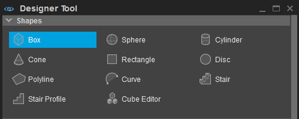
As shown above, this section contains several different shapes to choose from. They are all very easy to make.
Box
To make a box, select Box in the Designer tool window, click on the terrain with the left mouse button (LMB) and drag the mouse cursor in any direction to create a square. Let go of LMB to confirm the horizontal dimensions and move your mouse cursor up and down to determine the height of the box.
Click one final time to confirm the shape.
You can modify the the drawn box with various other tools in the Designer tool (e.g. Extrude, Offset, Move tools etc., see Selection).
Box-Specific Properties
When selecting and drawing this shape, properties specific to it appear under the Advanced section of the Designer Tool. These properties are:
| Property | Description |
|---|---|
Enable Magnet | When enabled, the cursor will snap to vertices and edges on the shape, making it easier to align the shape you're drawing to the already existing shape. A small box will be displayed on the cursor, which will change color when it is snapped to a vertex or edge. 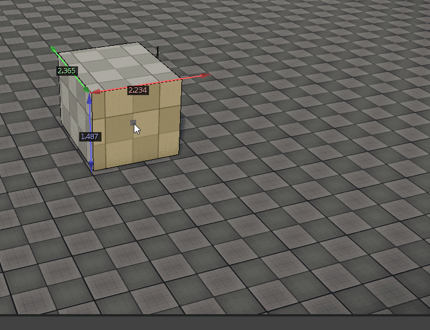 |
| Width | Width of the shape. |
| Depth | Depth of the shape. |
| Height | Height of the shape. |
Alignment to another polygon | When still in drawing mode (when the object is transparent), aligns the top polygon with that of another shape you hover over with your mouse. Only works in the same Designer object; if you create a separate object holding Shift while drawing, you will not be able to align it to another object.
|

Sphere
To make a sphere, select Sphere in the Designer tool window, click on the terrain and move your mouse. A sphere will appear when you move it, keeping the proportions the same as it becomes larger or smaller.
Click again to confirm the size.
You can modify the the drawn sphere with various other tools in the Designer tool (e.g. Extrude, Offset, Move tools etc., see Selection).
Sphere-Specific Properties
When selecting and drawing this shape, properties specific to it appear under the Advanced section of the Designer Tool. These properties are:
| Property | Description |
|---|---|
| Enable Magnet | When enabled, the cursor will snap to vertices and edges on the shape, making it easier to align the shape you're drawing to the already existing shape. A small box will be displayed on the cursor, which will change color when it is snapped to a vertex or edge. For an example, see further up the page. |
| Subdivision Count | The number of polygons the radius of the sphere is divided into. The higher the Subdivision Count, the smoother the sphere will be. |
| Radius | The radius of the sphere; basically how big the sphere will be. |
90 Degrees Snap | Makes the corner of the object closest to the cursor snap to the Y or X axis, causing the object to be at a 90-degree angle to that axis. Useful to make sure objects are orientated in the same direction. The profile will light up when the object has snapped to an axis this way. 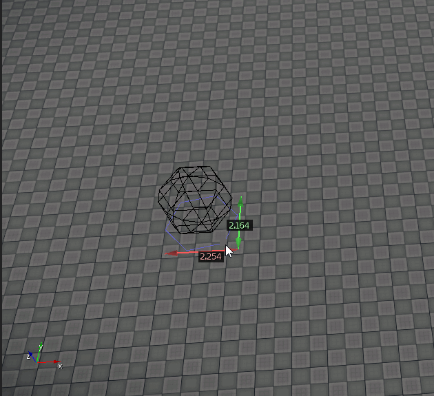 |
Cylinder
To make a Cylinder, select Cylinder in the Designer tool window, click on the terrain once with the left mouse button (LMB) and move the mouse cursor in any direction to create a circle. Click the LMB to confirm the horizontal dimensions and move your mouse cursor up and down to determine the height of the cylinder.
Click one final time to confirm the shape.
You can modify the the drawn cylinder with various other tools in the Designer tool (e.g. Extrude, Offset, Move tools etc., see Selection).
Cylinder-Specific Properties
When selecting and drawing this shape, properties specific to it appear under the Advanced section of the Designer Tool. These properties are:
| Property | Description |
|---|---|
| Enable Magnet | When enabled, the cursor will snap to vertices and edges on the shape, making it easier to align the shape you're drawing to the already existing shape. A small box will be displayed on the cursor, which will change color when it is snapped to a vertex or edge. For an example, see further up the page. |
| Subdivision Count | The number of polygons the radius of the sphere is divided into. The higher the Subdivision Count, the smoother the cylinder will be. |
| Radius | The radius of the cylinder. |
| 90 Degrees Snap | Makes the corner of the object closest to the cursor snap to the Y or X axis, causing the object to be at a 90-degree angle to that axis. Useful to make sure objects are orientated in the same direction. The profile will light up when the object has snapped to an axis this way. For an example, see further up the page. |
| Height | Height of the shape. |
| Alignment to another polygon | When still in drawing mode (when the object is transparent), aligns the top polygon with that of another shape you hover over with your mouse. Only works in the same Designer object; if you create a separate object holding Shift while drawing, you will not be able to align it to another object. For an example, see further up the page. |
Cone
To make a cone, select Cone in the Designer tool window, click on the terrain once with the left mouse button (LMB) and move the mouse cursor in any direction to create a circle. Click the LMB to confirm the horizontal dimensions and move your mouse cursor up and down to determine the height of the cone.
Click one final time to confirm the shape.
You can modify the the drawn cone with various other tools in the Designer tool (e.g. Extrude, Offset, Move tools etc., see Selection).
Cone-Specific Properties
When selecting and drawing this shape, properties specific to it appear under the Advanced section of the Designer Tool. These properties are:
| Property | Description |
|---|---|
| Enable Magnet | When enabled, the cursor will snap to vertices and edges on the shape, making it easier to align the shape you're drawing to the already existing shape. A small box will be displayed on the cursor, which will change color when it is snapped to a vertex or edge. For an example, see further up the page. |
| Subdivision Count | The number of polygons the radius of the cone is divided into. The higher the Subdivision Count, the smoother the cone will be. |
| Radius | The radius of the cone; basically how big the sphere will be. |
| 90 Degrees Snap | Makes the corner of the object closest to the cursor snap to the Y or X axis, causing the object to be at a 90-degree angle to that axis. Useful to make sure objects are orientated in the same direction. The profile will light up when the object has snapped to an axis this way. For an example, see further up the page. |
| Height | Height of the shape. |
| Alignment to another polygon | When still in drawing mode (when the object is transparent), aligns the top polygon with that of another shape you hover over with your mouse. Only works in the same Designer object; if you create a separate object holding Shift while drawing, you will not be able to align it to another object. For an example, see further up the page. |
Rectangle
This tool provides a way of creating a rectangle on a surface.
How it Works
Position a cursor to where you want a rectangle to start and drag the mouse holding LMB to draw a rectangle.
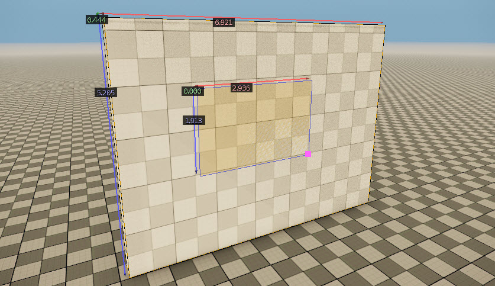
If the size of the rectangle isn't quite what you want yet, you can modify width or depth by entering numbers in the Shape-specific properties. This modification is valid until you perform another action.
You can also create a rectangle on a surface which is not included in the selected designer object:
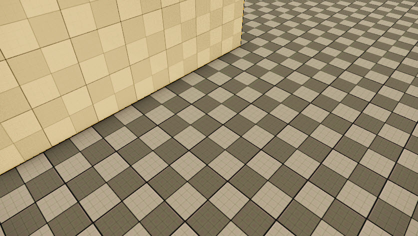 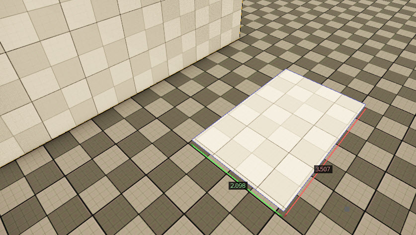
Tips
If the new rectangle is drawn overlapping other polygons, the rectangle will be split along the edges in the polygons going across the rectangle:
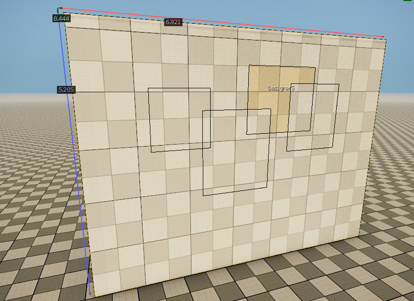
You can modify the the drawn rectangle with various other tools in the Designer tool (e.g. Extrude, Offset, Move tools etc., see Selection).
Rectangle-Specific Properties
When selecting and drawing this shape, properties specific to it appear under the Advanced section of the Designer Tool. These properties are:
| Property | Description |
|---|---|
| Enable Magnet | When enabled, the cursor will snap to vertices and edges on the shape, making it easier to align the shape you're drawing to the already existing shape. A small box will be displayed on the cursor, which will change color when it is snapped to a vertex or edge. For an example, see further up the page. |
| Width | Width of the shape. |
| Depth | Depth of the shape. |
Disc
This tool is used to draw a disc on a surface.
How it Works
Place a cursor where the center of the disc is going to be located and then click LMB.
Move the mouse to define a radius of the disc and then click LMB again to confirm.
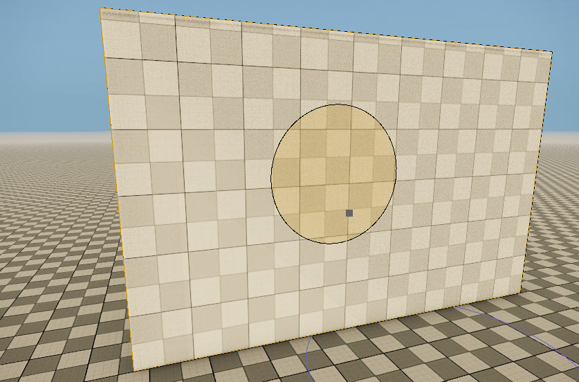
You can specify Subdivision Count and Radius in the Shape-specific properties once a disc is drawn until you start another action.
The Subdivision Count determines the number of sides the disc has. This is very useful if you want to draw an evenly shaped pentagon or octagon (or any other shape with a certain number of sides) on a surface.
Tips
If the new disc is drawn overlapping other polygons, the disc will be split along edges in the polygons going across the disc.
When you have confirmed the size of the disc, the overlapped polygons have been split along edges:
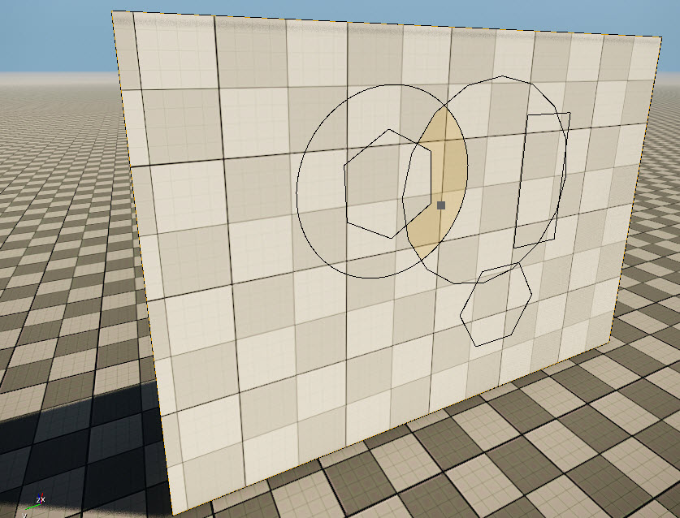
You can modify the the drawn disc with various other tools in the Designer tool (e.g. Extrude, Offset, Move tools etc., see Selection).
Disc-Specific Properties
When selecting and drawing this shape, properties specific to it appear under the Advanced section of the Designer Tool. These properties are:
| Property | Description |
|---|---|
| Enable Magnet | When enabled, the cursor will snap to vertices and edges on the shape, making it easier to align the shape you're drawing to the already existing shape. A small box will be displayed on the cursor, which will change color when it is snapped to a vertex or edge. For an example, see further up the page. |
| Subdivision Count | The number of polygons the radius of the disc is divided into. The higher the Subdivision Count, the smoother the disc will be. |
| Radius | The radius of the disc. |
| 9o Degrees Snap | Makes the corner of the object closest to the cursor snap to the Y or X axis, causing the object to be at a 90-degree angle to that axis. Useful to make sure objects are orientated in the same direction. The profile will light up when the object has snapped to an axis this way. For an example, see further up the page. |
Polyline
This tool lets you draw any sort of shape you want on an object by drawing it one line at a time.
How it Works
Position the mouse cursor on a surface and click LMB:
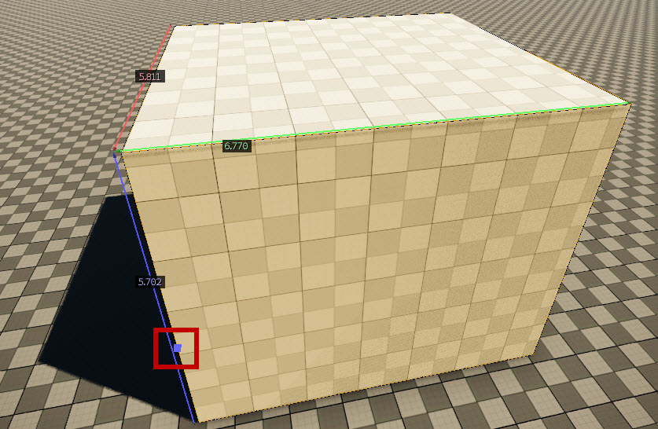
Move the mouse to another point and click LMB again. Repeat this process until you've made the shape you want. Finish up by connecting it back to the starting point. The mouse will snap to this point when you get close to it:
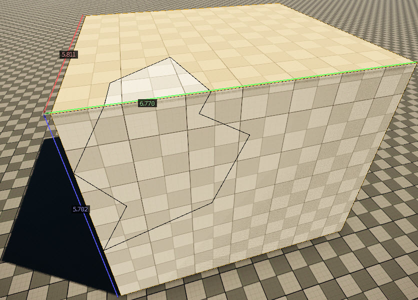
You can modify the the drawn polyline shape with various other tools in the Designer tool (e.g. Extrude, Offset, Move tools etc., see Selection).
Polyline-Specific Properties
When selecting and drawing this shape, properties specific to it appear under the Advanced section of the Designer Tool. These properties are:
| Property | Description |
|---|---|
| Enable Magnet | When enabled, the cursor will snap to vertices and edges on the shape, making it easier to align the shape you're drawing to the already existing shape. A small box will be displayed on the cursor, which will change color when it is snapped to a vertex or edge. For an example, see further up the page. |
Curve
Provides a way of drawing a curve.
How it Works
Standard Curve
Draw a line from one edge to the other:
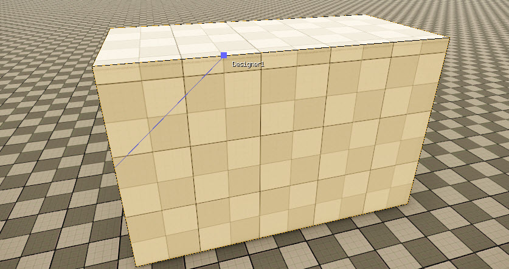
Now you can move the mouse to make a partial arc. When the arc gets the shape you want, press LMB:
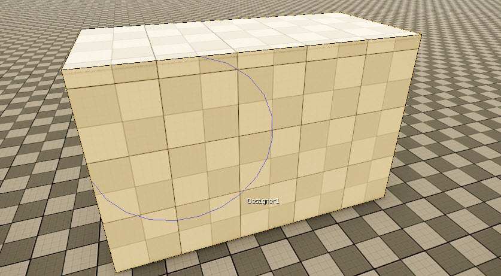
You can modify the the drawn curve with various other tools in the Designer tool (e.g. Extrude, Offset, Move tools etc., see Selection).
Curve-Specific Properties
When selecting and drawing this shape, properties specific to it appear under the Advanced section of the Designer Tool. These properties are:
| Property | Description |
|---|---|
| Enable Magnet | When enabled, the cursor will snap to vertices and edges on the shape, making it easier to align the shape you're drawing to the already existing shape. A small box will be displayed on the cursor, which will change color when it is snapped to a vertex or edge. For an example, see further up the page. |
| Subdivision Count | The number of polygons the curve is divided into. The higher the Subdivision Count, the smoother the curve will be. |
Stair
The Stair tool provides an easy way to help you create a staircase with a uniform step size on a surface.
How it Works
Draw a rectangle holding LMB:
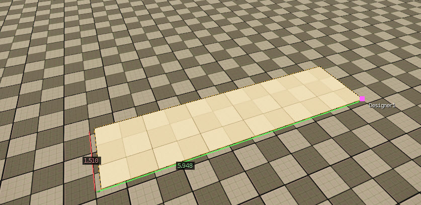
Raise to a desired height by moving the mouse up and down.
The stairs will be created in the direction of the longer sides:
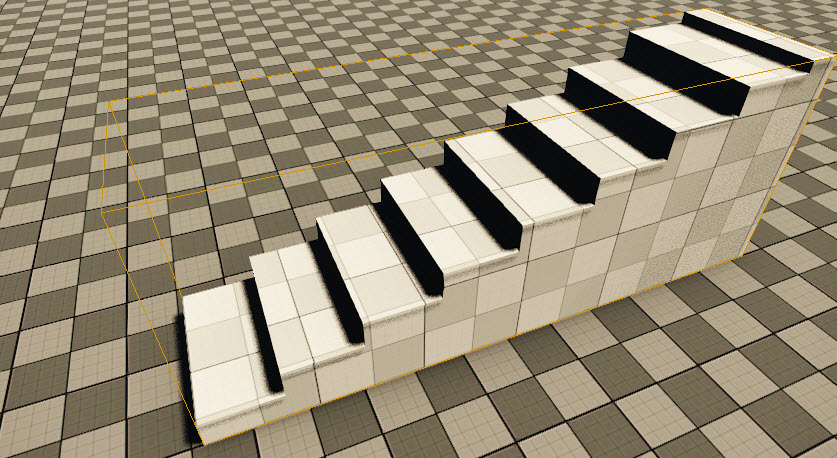
If you want to create the stairs in the direction of the shorter sides, turn on the Rotation by 90 Degrees checkbox in the Stair properties:
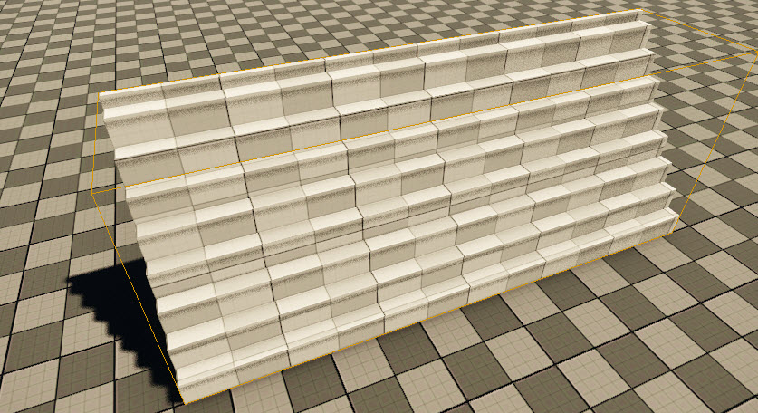
If you turn on the Mirror checkbox in the Stair properties, the stairs will be mirrored:
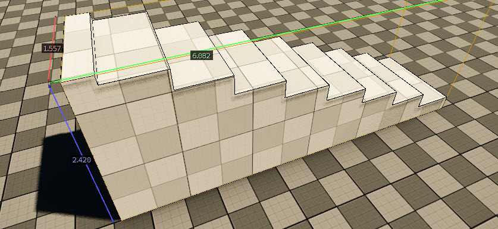
Pressing LMB will complete the creation of the stair. Before performing another action, you can modify the stairs by entering values in the Stair properties.
If you create stairs on the designer object, the stair will be glued to the object to be one as follows. See the triangulated faces.
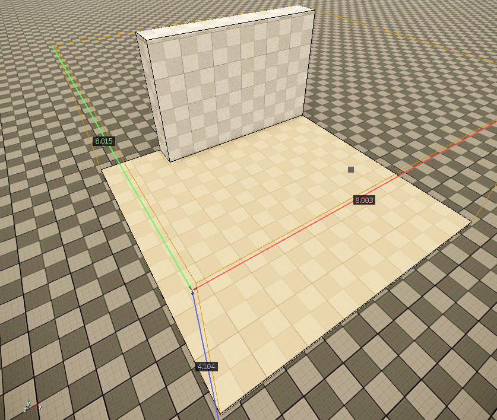 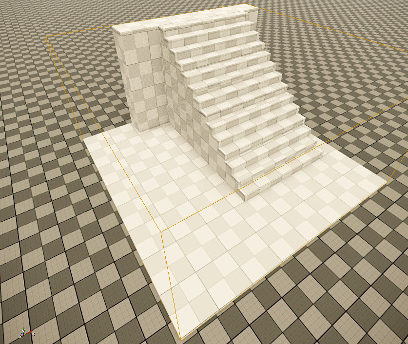
Stair-Specific Properties
When selecting and drawing this shape, properties specific to it appear under the Advanced section of the Designer Tool. These properties are:
| Property | Description |
|---|---|
| Step Rise | The size of each step rise. |
| Mirror | Mirrors the stairs against an invisible plane centered. |
| Rotation by 90 Degrees | Rotates a stair by 90 degrees maintaining the width, height and depth of a box. |
| Enable Magnet | When enabled, the cursor will snap to vertices and edges on the shape, making it easier to align the shape you're drawing to the already existing shape. A small box will be displayed on the cursor, which will change color when it is snapped to a vertex or edge. For an example, see further up the page. |
| Width | Width of the stairs. |
| Depth | Depth of the stairs. |
| Height | Height of the stairs. |
| Alignment to another polygon | When still in drawing mode (when the object is transparent), aligns the top polygon with that of another shape you hover over with your mouse. Only works in the same Designer object; if you create a separate object holding Shift while drawing, you will not be able to align it to another object. For an example, see further up the page. |
Stair Profile
This tool is to draw a stair profile on a surface, which will be pulled with the Extrude tool to be a stair.
How it Works
1. Draw a line:
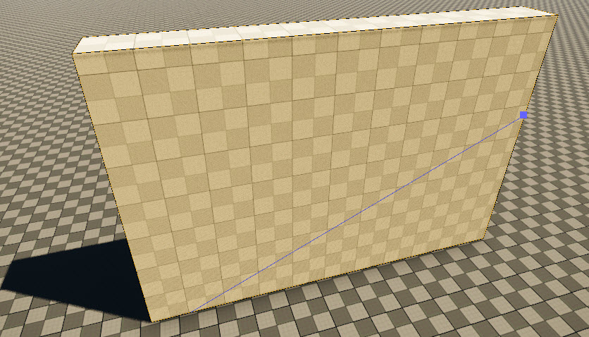
2. Select the direction of the stair by moving the mouse up and down:
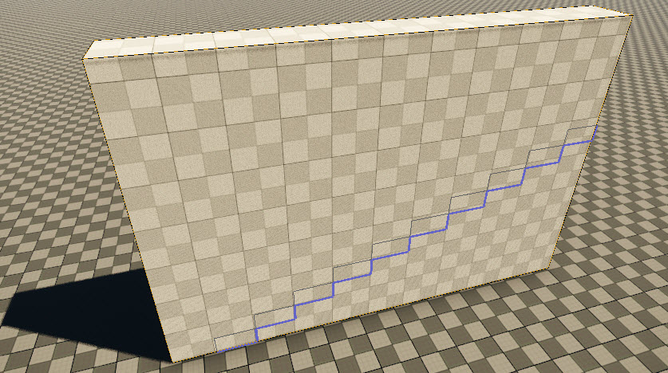
3. Complete it by clicking LMB:
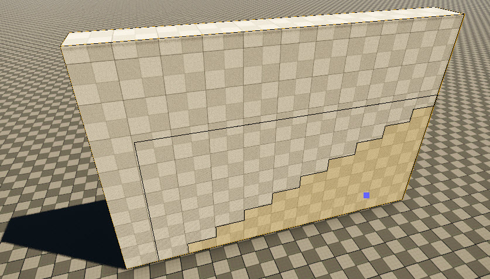
4. Create stairs by pushing or pulling the profile with the Extrude tool:
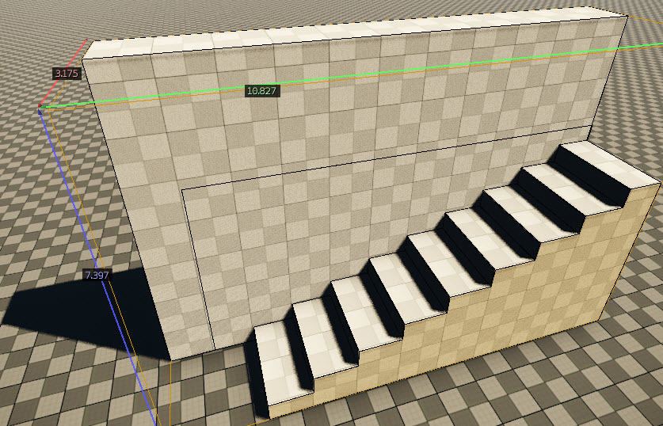
Stair Profile-Specific Properties
When selecting and drawing this shape, properties specific to it appear under the Advanced section of the Designer Tool. These properties are:
| Property | Description |
|---|---|
| Enable Magnet | When enabled, the cursor will snap to vertices and edges on the shape, making it easier to align the shape you're drawing to the already existing shape. A small box will be displayed on the cursor, which will change color when it is snapped to a vertex or edge. For an example, see further up the page. |
| Step Rise | The size of each step rise. |
| Closed Profile | Closes the profile (side) of the stairs when enabled. This will only be visible when the stair profile has been extruded to create a staircase. Closed vs. Open Profile 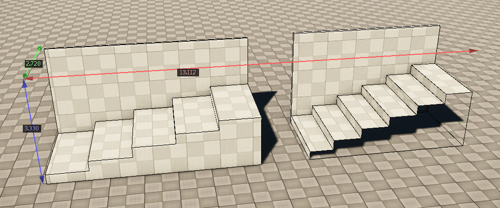 |
Cube Editor
The Cube Editor provides very simple and easy ways to make shapes in the world by just putting or removing or painting cubes, which can have various sizes.
Cube Editor-Specific Buttons
| Button | Description |
|---|---|
| Add | Add a cube on the brush with the specified Sub Material ID. |
| Remove | Remove a cube under the brush. |
| Paint | Paint selected cubes with the specified Sub Material ID. |
| Brush Size | Select the cube brush size. This Brush size can be changed scrolling the mouse wheel and holding CTRL in the viewport. |
| Merge Sides | With this check box enabled, the added faces or remained faces after removing a cube will be merged with the adjoining faces. |
How it Works
You can add, remove or paint many cubes in one time by dragging the mouse pressing LMB.
Add Mode
With Add mode, you can add cubes to a surface or a side of an object (any object, whether or not they were made with the Designer tool).
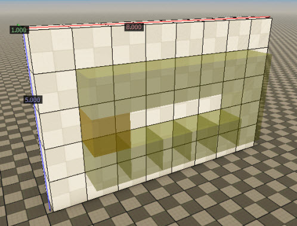 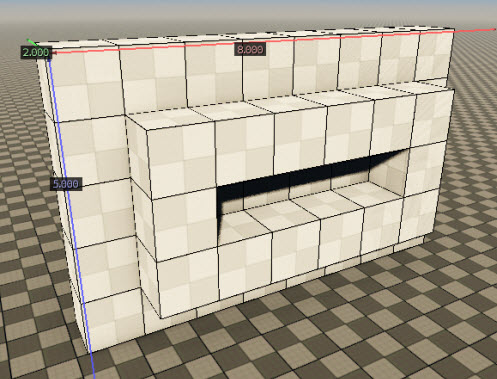
Remove Mode
Remove mode works similarly to the Add mode, except that it lets you remove cubes from an object. This works best with objects made with the Cube Editor tool:
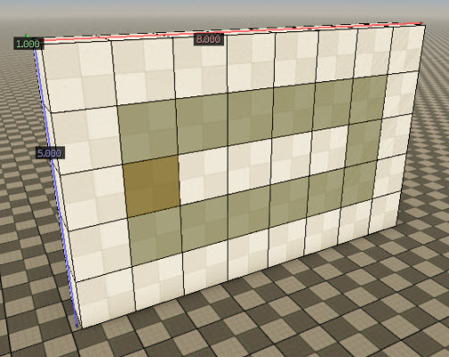 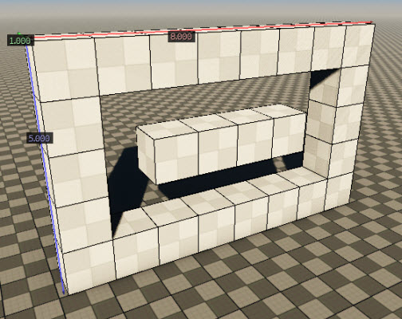
Paint Mode
This will assign the currently selected sub material to the cubes below the cursor. To select a material go to the Advanced panel in the Designer tool and select the Groups/UV tab. A list of sub-materials will be available if the material assigned to this designer object has sub-materials assigned.
If the material assigned to this Designer object has no sub-materials, this mode does nothing.
Axis Placement
Holding Shift and LMB and moving the mouse, you can place, remove or paint cubes along a straight line aligned with each axis.
Examples:
After merging the cubes, the result of the above example looks like this:
Merge Sides
If you make a model with the Cube Editor disabling Merge Sides check box, the result shape will consist of many square faces:
If you want to simplify the faces to have less polygons, you can do this with the Merge tool (Under Advanced in the Designer Tool).
Select all faces with the All/None tool (Under Selection in the Designer Tool) and click the Merge button. You will be able to see the following result with clean polygons.
Even after merging polygons, you can add, remove and paint cubes as you did before.